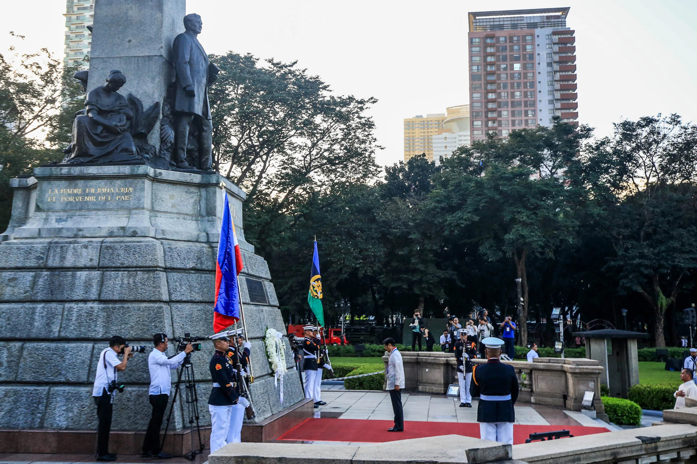

Date : December 30, 1896
|
Brief Description Filipinos all across the world take time off on December 30 to commemorate the of Dr Rizal in Bagumbayan, Manila, a national hero and a prominent advocate for reforms and independence from Spanish colonial rule. Rizal’s writings, particularly “Noli Me Tangere” and “El Filibusterismo,” inspired many Filipinos to fight for their rights and freedom. |
|
Brief History
Rizal Day was first instituted with a decree dated December 20, 1898 signed by
President Emilio Aguinaldo in Malolos, Bulacan, celebrating December 30, 1898 as a
national day of mourning for Rizal and all the victims of the Spanish colonial rule
of the Philippines. Daet, Camarines Norte was the first town to follow the decree,
building a monument designed by Lt. Col. Antonio Sanz, led by Sanz and Lt. Col. Ildefonso Alegre,
and financed by the townsfolk of Camarines Norte and the rest of the Bicol Region.
Finished in February 1899, the three-tiered stone pylon inscribing Rizal's novels
Noli Me Tangere and El Filibusterismo, and Morga, for Antonio de Morga,
author of Sucesos de las islas Filipinas, a book about the early days of the Spanish colonization
in the Philippines. |
 |
|
References |
Check Out More Philippine Holidays |